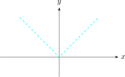
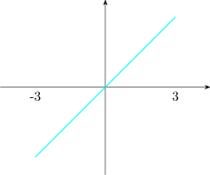
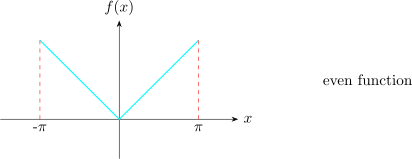

7.6 Even and Odd Functions
A function \(g\) is even if \(g(-x) = g(x)\) for all \(x\); its graph is symmetric with respect to the \(y\)-axis, as for \(|x|\), \(x^2\) and \(\cos x\).

A function \(h\) is odd if \(h(-x) = -h(x)\) for all \(x\), as for \(x\), \(x^3\) and \(\sin x\); its graph is symmetric with respect to the origin. The product of two even or of two odd functions is even, and the product of an even and an odd function is odd.
Properties
- 1.
- If \(g\) is even, then \(\int ^L_{-L} g(x)\,dx = 2\int ^L_0 g(x)\,dx\).
- 2.
- If \(h\) is odd, then \(\int ^L_{-L} h(x)\,dx = 0\).
Fourier Series of Even and Odd Functions
If \(f\) is even, \(f(x)\sin \frac {n\pi x}{L}\) is odd, so every \(b_n = 0\), and \(f(x)\cos \frac {n\pi x}{L}\) is even. So the Fourier series of an even function of period \(2L\) is a Fourier cosine series \[f(x) = a_0 + \sum ^{\infty }_{n=1}a_n \cos \frac {n\pi x}{L} ,\qquad a_0 = \frac {1}{L}\int ^L_0f(x)\,dx ,\qquad a_n = \frac {2}{L}\int ^L_0 f(x) \cos \frac {n\pi x}{L}\,dx .\] Likewise the Fourier series of an odd function is a Fourier sine series \[f(x) = \sum ^{\infty }_{n=1}b_n \sin \frac {n\pi x}{L} ,\qquad b_n = \frac {2}{L}\int ^L_0 f(x) \sin \frac {n\pi x}{L}\,dx .\] A function given only on \(0<x<L\) can be extended to \(-L<x<L\) as an even or as an odd function, giving a half-range cosine or sine expansion; both represent \(f\) on \((0,L)\).
- 1.
- Find the Fourier series of the function of period \(2\pi \) with \(f(x) = |x|\) for \(-\pi < x < \pi \).
- 2.
- Find the Fourier series of the function of period \(6\) with \(f(x) = x\) for \(-3 < x < 3\).

Solution.
- 1.
-

The function is even, so \(b_n = 0\) for all \(n\) and \(f(x) = a_0 + \sum ^{\infty }_{n=1}a_n \cos n x\), with \[a_0 = \frac {1}{\pi } \int ^{\pi }_0 x\,dx = \frac {\pi }{2} ,\] and, integrating by parts, \[a_n = \frac {2}{\pi }\int ^{\pi }_0 x \cos n x\,dx = \frac {2}{n^2\pi }\Big [\cos nx + nx\sin nx \Big ]^{\pi }_0 = \frac {2}{n^2\pi }\big ((-1)^n-1\big ),\] which is \(0\) for even \(n\) and \(-\frac {4}{n^2\pi }\) for odd \(n\). So \[|x| = \frac {\pi }{2} - \frac {4}{\pi }\left (\cos x + \frac {\cos 3x}{9} + \frac {\cos 5x}{25}+ \cdots \right ) = \frac {\pi }{2} - \frac {4}{\pi }\sum _{n=1}^\infty \frac {\cos (2n-1)x}{(2n-1)^2},\qquad -\pi \leq x\leq \pi .\] The function is continuous, so by Theorem 7.4.1 the series converges to \(f\) everywhere. At \(x = 0\), \[0 = \frac {\pi }{2} - \frac {4}{\pi }\left (1 + \frac {1}{9}+ \frac {1}{25}+ \cdots \right ),\qquad \text {so}\qquad 1 + \frac {1}{9}+ \frac {1}{25}+ \cdots = \frac {\pi ^2}{8} .\]
- 2.
- Here \(2L = 6\), so \(L = 3\), and \(f\) is odd, so \(a_n = 0\) for all \(n\) and \[b_n = \frac {2}{3}\int ^3_0x \sin \frac {n\pi x}{3}\,dx = \frac {2}{3}\left [-\frac {3 x}{n\pi }\cos \frac {n\pi x}{3}\right ]_0^3 + \frac {2}{n\pi }\int ^3_0 \cos \frac {n\pi x}{3}\,dx = -\frac {6(-1)^n}{n\pi } ,\] the last integral being zero. So \(b_n = \frac {6}{n\pi }\) for odd \(n\) and \(-\frac {6}{n\pi }\) for even \(n\), and \[f(x) = \frac {6}{\pi }\left (\sin \frac {\pi x}{3} - \frac {1}{2}\sin \frac {2\pi x}{3} + \frac {1}{3}\sin \pi x - \frac {1}{4}\sin \frac {4\pi x}{3} + \cdots \right ) .\] At \(x = \pm 3\) it converges to \(0\), the average of the jump from \(3\) to \(-3\).
Solution. The odd extension of \(f\) is the square wave of Example 7.3.2 with \(k = 1\), so \[1 = \frac 4\pi \left (\sin x + \frac {\sin 3x}{3} + \frac {\sin 5x}{5} + \cdots \right ),\qquad 0<x<\pi .\] The half-range cosine expansion, by contrast, is just the constant \(1\).
Example 7.6.3. Use the series for \(x\) in Example 7.3.3 and Parseval’s identity \[\frac {1}{\pi }\int _{-\pi }^\pi f(x)^2\,dx = 2a_0^2 + \sum _{n=1}^\infty (a_n^2 + b_n^2)\] to find \(\sum _{n=1}^\infty \frac {1}{n^2}\).
Solution. With \(b_n = \frac {2(-1)^{n+1}}{n}\), the right side is \(\sum \frac {4}{n^2}\), and the left side is \(\frac 1\pi \int _{-\pi }^\pi x^2\,dx = \frac {2\pi ^2}{3}\). So \(\sum _{n=1}^\infty \frac {1}{n^2} = \frac {\pi ^2}{6}\). (Parseval’s identity follows from squaring the series and integrating term by term with Theorem 7.2.1.)
Fourier Integrals
A function on the whole line that is not periodic can be thought of as the limit of functions of period \(2L\) as \(L\to \infty \). The frequencies \(\frac {n\pi }{L}\) then fill in the whole positive axis, and the Fourier sum becomes an integral. If \(f\) is piecewise smooth on every finite interval and \(\int _{-\infty }^\infty |f(x)|\,dx\) is finite, then \[f(x) = \int _0^\infty \big (A(w)\cos wx + B(w)\sin wx\big )\,dw ,\] where \[A(w) = \frac 1\pi \int _{-\infty }^\infty f(v)\cos wv\,dv ,\qquad B(w) = \frac 1\pi \int _{-\infty }^\infty f(v)\sin wv\,dv ,\] at every point of continuity, and at a jump the integral gives the average of the one-sided limits. This is the Fourier integral of \(f\).
Example 7.6.4. Find the Fourier integral of \(f(x) = 1\) for \(|x|<1\), \(f(x) = 0\) for \(|x|>1\), and deduce the value of \(\int _0^\infty \frac {\sin w}{w}\,dw\).
Solution. The function is even, so \(B(w) = 0\) and \(A(w) = \frac 1\pi \int _{-1}^1\cos wv\,dv = \frac {2\sin w}{\pi w}\). Hence \[\frac 2\pi \int _0^\infty \frac {\sin w\cos wx}{w}\,dw = \begin {cases} 1, & |x|<1,\\ \frac 12, & |x| = 1,\\ 0, & |x|>1 . \end {cases}\] At \(x = 0\) this gives \(\int _0^\infty \frac {\sin w}{w}\,dw = \frac {\pi }{2}\), the value found by the Laplace transform in Example 6.9.3.
Questions on this section
Stuck on something here? Ask below and it stays attached to this topic.